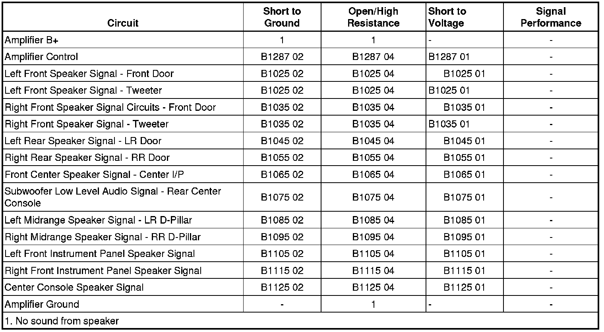

B1055
DTC B1025-B1125
Diagnostic Instructions
* Perform the Diagnostic System Check - Vehicle (Initial Inspection and Diagnostic Overview) prior to using this diagnostic procedure.
* Review Strategy Based Diagnosis (Initial Inspection and Diagnostic Overview) for an overview of the diagnostic approach.
* Diagnostic Procedure Instructions (Initial Inspection and Diagnostic Overview) provides an overview of each diagnostic category.
DTC Descriptors
DTC B1025 01
- Audio Output 1 Left Front Circuit Short to Battery (LF Door)
DTC B1025 02
- Audio Output 1 Left Front Circuit Short to Ground (LF Door)
DTC B1025 04
- Audio Output 1 Left Front Circuit Open (LF Door)
DTC B1035 01
- Audio Output 2 Right Front Circuit Short to Battery (RF Door)
DTC B1035 02
- Audio Output 2 Right Front Circuit Short to Ground (RF Door)
DTC B1035 04
- Audio Output 2 Right Front Circuit Open (RF Door)
DTC B1045 01
- Audio Output 3 Left Rear Circuit Short to Battery (LR Door)
DTC B1045 02
- Audio Output 3 Left Rear Circuit Short to Ground (LR Door)
DTC B1045 04
- Audio Output 3 Left Rear Circuit Open (LR Door)
DTC B1055 01
- Audio Output 4 Right Rear Circuit Short to Battery (RR Door)
DTC B1055 02
- Audio Output 4 Right Rear Circuit Short to Ground (RR Door)
DTC B1055 04
- Audio Output 4 Right Rear Circuit Open (RR Door)
DTC B1065 01
- Audio Output 5 Circuit Short to Battery (Center IP)
DTC B1065 02
- Audio Output 5 Circuit Short to Ground (Center IP)
DTC B1065 04
- Audio Output 5 Circuit Open (Center IP)
DTC B1075 01
- Audio Output 6 Circuit Short to Battery (Subwoofer)
DTC B1075 02
- Audio Output 6 Circuit Short to Ground (Subwoofer)
DTC B1075 04
- Audio Output 6 Circuit Open (Subwoofer)
DTC B1085 01
- Audio Output 7 Circuit Short to Battery (LR D Pillar)
DTC B1085 02
- Audio Output 7 Circuit Short to Ground (LR D Pillar)
DTC B1085 04
- Audio Output 7 Circuit Open (LR Door)
DTC B1095 01
- Audio Output 8 Circuit Short to Battery (RR Door)
DTC B1095 02
- Audio Output 8 Circuit Short to Ground (RR Door)
DTC B1095 04
- Audio Output 8 Circuit Open (RR Door)
DTC B1105 01
- Audio Output 9 Circuit Short to Battery (LF IP)
DTC B1105 02
- Audio Output 9 Circuit Short to Ground (LF IP)
DTC B1105 04
- Audio Output 9 Circuit Open (LF IP)
DTC B1115 01
- Audio Output 10 Circuit Short to Battery (RF IP)
DTC B1115 02
- Audio Output 10 Circuit Short to Ground (RF IP)
DTC B1115 04
- Audio Output 10 Circuit Open (RF IP)
DTC B1125 01
- Audio Output 11 Circuit Short to Battery (Console Center)
DTC B1125 02
- Audio Output 11 Circuit Short to Ground (Console Center)
DTC B1125 04
- Audio Output 11 Circuit Open (Console Center)
Diagnostic Fault Information

Circuit/System Description
The up-level radio (UQA) supplies 4 channels of audio to an amplifier. The amplifier supplies 10 input signal channels to 11 speakers. Each audio output channel circuit (+) and (-) at the radio and amplifier if equipped, have a DC bias voltage that is one half of the battery voltage. The audio output channel circuits will measure approximately 6.5 volts DC when using a DMM. The audio music or talking being played on the audio system is produced by a varying AC voltage that is centered around the DC bias voltage on the same circuit. The AC voltage measured on these circuits on the output of a radio that is not amplified will be approximately 1-3 volts AC when using a DMM. The AC voltage is what causes the speaker cones to move and produce sound. This voltage will vary depending on what type of audio is being listened to, talk or music, and type of music, and the volume setting of the system. Low volume and talk settings will measure around 1 volt AC and less, where constant music may measure 3 volts AC and slightly higher. In an amplified audio system, these similar AC voltage measurements may be slightly higher on the output of the amplifier, and the typical AC voltage readings at the output of the radio are less than 1 volt AC.
Conditions for Running the DTC
* Radio ON.
* Battery voltage must be between 9-16 volts.
Conditions for Setting the DTC
DTC Set By The Radio
The DTC will set when the radio detects a short to voltage, short to ground, or an open/high resistance in any of the low level audio signal circuits (+) and (-).
DTC Set By The Audio Amplifier
The DTC will set when the audio amplifier detects a short to voltage, short to ground, or an open/high resistance in any of the speaker output circuits (+) and (-).
Action Taken When the DTC Sets
No sound is present from one or more of the speakers.
Conditions for Clearing the DTC
* The condition responsible for setting the DTC no longer exists.
* A history DTC will clear once 100 consecutive malfunction-free ignition cycles have occurred.
Diagnostic Aids
Important: The supporting DTCs can be set by either the radio or the audio amplifier. When a DTC is set by the radio, diagnose suspect audio signal circuits to the audio amplifier. For DTCs set by the audio amplifier, diagnose audio output circuits to the speakers from the amplifier.
Reference Information
Schematic Reference
Radio/Navigation System Schematics (Radio/Navigation System Schematics)
Connector End View Reference
Component Connector End Views (Connector Views)
Description and Operation
Radio/Audio System Description and Operation (Radio/Audio System Description and Operation)
Electrical Information Reference
* Circuit Testing (Component Tests and General Diagnostics)
* Connector Repairs (Component Tests and General Diagnostics)
* Testing for Intermittent Conditions and Poor Connections (Component Tests and General Diagnostics)
* Wiring Repairs (Component Tests and General Diagnostics)
Scan Tool Reference
Control Module References (Programming and Relearning) for scan tool information
Circuit/System Testing
DTC Set By The Audio Amplifier
1. Ignition OFF, disconnect the harness connector at the inoperative speaker.
2. Ignition ON, radio ON, test for 5.0-7.5 volts between the inoperative speaker output positive (+) circuit and ground.
• If less than the specified range, test the output circuit for a short to ground or an open/high resistance. If the circuit tests normal, replace the audio amplifier.
• If greater than the specified range, test the output circuit for a short to voltage. If the circuit tests normal, replace the audio amplifier.
3. Ignition ON, radio ON, test for 5.0-7.5 volts between the inoperative speaker output negative (-) circuit and ground.
• If less than the specified range, test the output circuit for a short to ground or open/high resistance. If the circuit tests normal, replace the audio amplifier.
• If greater than the specified range, test the output circuit for a short to voltage. If the circuit tests normal, replace the audio amplifier.
4. If all circuits test normal, test or replace the inoperative speaker.
DTC Set By The Radio
1. Ignition OFF, disconnect the appropriate audio amplifier harness connector for the inoperative low level audio signal circuit.
2. Ignition ON, radio ON, test for 5.0-7.5 volts between the appropriate low level audio signal positive (+) circuit and ground.
• If less than the specified range, test the signal circuit for a short to ground or an open/high resistance. If the circuit tests normal, replace the radio.
• If greater than the specified range, test the signal circuit for a short to voltage. If the circuit tests normal, replace the radio.
3. Ignition ON, radio ON, test for 5.0-7.5 volts between the appropriate low level audio signal negative (-) circuit and ground.
• If less than the specified range, test the signal circuit for a short to ground or open/high resistance. If the circuit tests normal, replace the radio.
• If greater than the specified range, test the signal circuit for a short to voltage. If the circuit tests normal, replace the radio.
4. If all circuits test normal, replace the audio amplifier.
Repair Instructions
Perform the Diagnostic Repair Verification (Verification Tests) after completing the diagnostic procedure.
* Speaker Replacement Reference (Speaker Replacement Reference)
* Control Module References (Programming and Relearning) for Amplifier and Radio replacement, setup, and programming